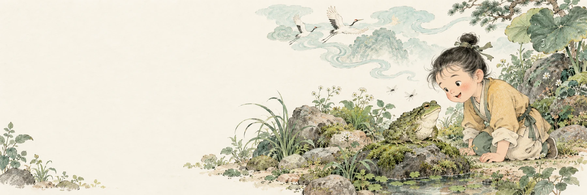

中三中國語文 · 課文探索
小小事物，
大大想像。
「時有物外之趣」—— 沈復《閒情記趣》
拖動左邊的想像卡，放到對應的事物上。拖動想像卡，放到對應的事物上。也可以先點選卡片，再點選答案格。
探索進度0 / 6
02
所見的事物
沈復把它們想像成甚麼？讓想像力出發！六組小發現，等你來配對。

中三中國語文 · 課文探索
拖動左邊的想像卡，放到對應的事物上。拖動想像卡，放到對應的事物上。也可以先點選卡片，再點選答案格。